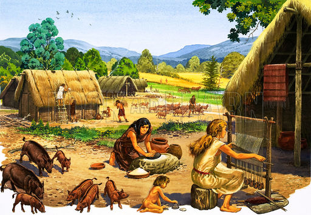

În societatea modernă modul standard de scriere a anului este cel Gregorian, având în centru nașterea lui Cristos, deci pornind de acum 2020 de ani cu anul 1AD.
Această metodă este (evident) funtională, dar a lasat un numar de istorici sa speculeze dacă există un sistem mai bun de a înregistra timpul. Aceasta metoda având o serie greu de ignorat de avantaje.
Avantajele utilizării sistemului Holocenic
 1.Acest sistem, spre deosebire de cel Gregorian, este centrat in jurul perioadei in care umanitatea a inceput perioada agriculturală, moment cheie pentru progresul nostru istoric, și relevant pentru orice om indiferent de provenință
2.Acesta elimină necesitatea utilizării aniilor negativi in majoritatea discutiiolr despre istorie, anul 300BC devenind 9700HE, anul succesiv devenind 9701HE, spre deosebire de sistemul Gregorian prin care anul 300BC este urmat de 299BC
3.Facilitează înțelegerea perioadei antice. Sistemul Gregorian a distorsionat perspectiva noastră despre perioada antică, ani precum 200BC si 100AD aratănd ca o durată mult mai mare de timp față de anii 300AD si 600AD chiar dacă sunt comparativ egale
Dar din păcate acest calendar este dezavantajat de momentul în care a fost propus, era prea tarziu. Aceasta este doar una dintre ideile care au fost ucise de viteza de dezvoltare a tehnologiei care funționeză pe pricipiul ușurinței de implementare. Această schimbare de paradigmă fiind aproape imposibilă in societatea modernă